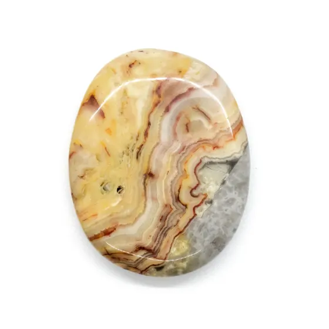
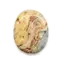

Mineral Grimoire

Crazy Lace AgateSpellworking
Crazy lace agate is a trigonal variety of banded chalcedony infused with aluminum and iron, originating exclusively in Mexico. Its distinctive swirling patterns and layered color combinations make it one of the most visually recognizable forms of agate. Historically worn as an amulet by nomadic peoples, it was carried to prevent travel accidents, fortify the body, and steady the mind. Known today as the Laughter Stone, it is considered the most important protection stone for travelers, and one of the great stones of joy.
Chakra Work
Crazy lace agate vibrates at a lower frequency than many other stones, a quality that makes it especially effective for grounding work. At the Root Chakra, it anchors the bearer in the present moment, easing anxiety about the future and building emotional stability. At the Solar Plexus Chakra, it amplifies optimism and cultivates inner strength, helping the bearer reconnect with confidence and personal power even during difficult periods.
For the Beginner: Crazy lace agate encourages presence and lightness. It reveals the humor in life's challenges, offering perspective and relief without bypassing the difficulty. Carry it when traveling to ensure safe departure and return.
For the Advanced Practitioner: Crazy lace agate supports emotional processing by keeping the spirit buoyant through grief and worry. Extended practitioners also use it as a stone of spiritual travel, carrying it during astral projection, shamanic journeying, and lucid dreaming to ensure safe passage and return from other realms. Pairs well with Carnelian, Citrine, Fluorite, Red Jasper, or Smoky Quartz for amplified grounding, protection, and joy work.
Home & Ritual Use
A bowl of tumbled crazy lace agate placed in a gathering space is said to draw laughter and celebration to any event hosted there. Offering a piece to guests at sacred gatherings is a traditional way of sharing its joyful energy.
Magickal Message
"Laugh and the world laughs with you. Work with me to remember the fun you can have in life and turn challenges into games."
Colors
Crazy lace agate appears in swirling, banded combinations of red, orange, white, cream, yellow, brown, and pink. Its color patterns shift dramatically between specimens, with no two stones displaying the same arrangement of bands and swirls.